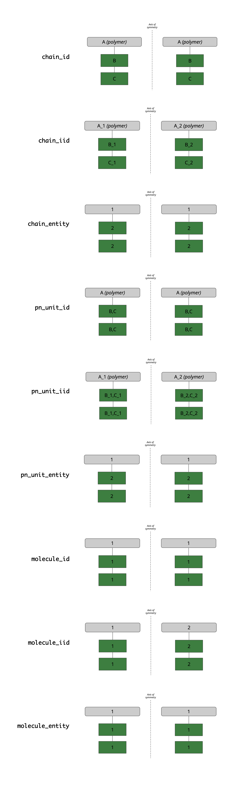

Glossary#
> “The PDB is a scary place, don’t go there.” - Rohith Krishna, c. 2022
We adopt a consistent, composable naming convention for different ‘bits’ of a mmCIF file throughout data parsing, preprocessing, loading, and featurization such that our code remains unambiguous. Familiarity with our conventions is required for deciphering, and contributing to, our shared codebase. We outline these conventions below:
Entities vs. Instances#
Within our nomenclature, entities are chemical compounds where we distinguish the (covalent) connectivity and components, but not the coordinates. instances, meanwhile, are unique copies of an entity in 3D. If you think of it in terms of python: entity ~ class and instance ~ instance of that class.
For example, within a mmCIF file, there may be multiple copies of the same chain (sometimes referred to as asym_id in PDB files), each with a unique set of coordinates, but identical sequences and connectivities. These compounds are distinct instances, but the same underlying entity (i.e., same UNIREF identifier).
Suffixes#
_entity: A unique numeric id for each entity.
_id: A group id, that may or may not be more than one instance, subdivided for example through symmetries during assembly building. For exampe, we would consider the PDB’s asym_id to be an _id, as it uniquely specifies the entity, but not the instance (due to transformations). If unfamiliar with transformations and biological assemblies in the PDB, read this helpful article from RCSB before continuing.
_iid: The “instance ID”, which uniquely specifies a group of atoms in three-dimensional space.
Chains, PN_Units, and Molecules#
Chains. The smallest covalently bound unit within the PDB is the “chain,” with each chain represented in a mmCIF file by a unique combination of an asym_id and a transformation_id.
PN_Unit: Short for “polymer or non-polymer unit”. We define a pn_unit as covalently linked chains of the same type. For example, an oligosaccharide may be represented as multiple non-polymer chains covalently bound together, which we should treat as one pn_unit. However, an oligosaccharide bound to a protein would be two separate pn_units (one for the oligosaccharide, one for the protein), as they differ in chain type.
Molecule: This is aligned with the definition of a molecule in chemistry (created by traversal of the bond graph). It refers to a single connected component of a covalent bond graph. May contain multiple pn_units (e.g. a covalent modification of a protein with a glycan would be 2 pn_units but 1 molecule).
Combinatorial Nomenclature - Worked Example#
Imagine we have three chains in the mmCIF file asymmetric unit, A, B, and C. We also, through symmetry, build the biological unit through a reflection of the asymmetric unit. Assume that A is a polymer, B and C are two covalently bound sugars, each with the same chemical formula and bond connectiviy, and B is covalently bound to a residue in A (glycosylation).
Putting it all together, we arrive at the following combinatorial nomenclature to describe the different components in our fictional entry:
Chains#
chain_id: “A”, “B”, “C”
chain_iid: “A_1”, “B_1”, “C_1” (first transform, identity) and “A_2”, “B_2”, and “C_2” (second transform, reflection)
chain_entity: 1, 2, 2 correspondong to chain_ids “A”, “B”, and “C”, respectively
PN_Unit#
pn_unit_id: “A”, “B,C”
pn_unit_iid: “A_1”, “B_1,C_1”, “A_2”, “B_2,C_2”
pn_unit_entity: 1, 2, corresponding to pn_unit_ids “A” and “B,C”, respectively
Molecules#
molecule_id: 1 (numeric for memory concerns, but can be conceptualized as “A,B,C”)
molecule_iid: 1 (numeric for memory concerns, but can be conceptualized as “A_1,B_1,C_1”), 2 (e.g., “A_2,B_2,C_2”)
molecule_entity: 1
Visually, we can represent the above example as:
